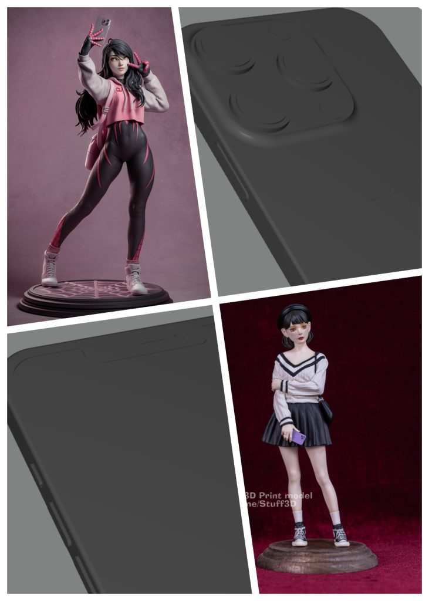

这里是苹果IPhone ProMax！
提取码
81bk

分享两个拿着手机的女孩造型，女蜘蛛侠的模型质量高，手机的建模也很细致。另外一个造型很艺术，重点是手机都是iPhone，型号应该是11-14的max机型，大家可以从文件中提取，顺带附了两个不同的iPhone手机模型，各有优势吧。
除了模型的素质，重要的还有涂装和作品最终的整理，这些决定了一个作品的最终传达。
下面分享的是文件链接：
https://pan.baidu.com/s/1yTnGvGIU6sWq4ntAqoI9Ww
提取码：81bk
加群获得更多免费模型！